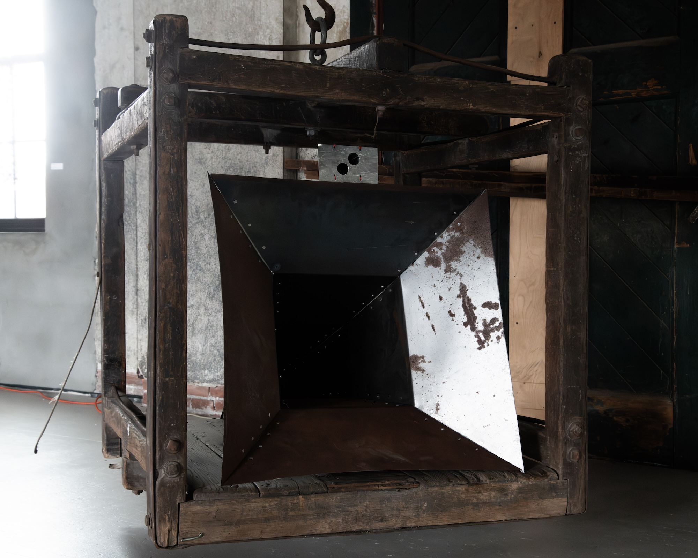
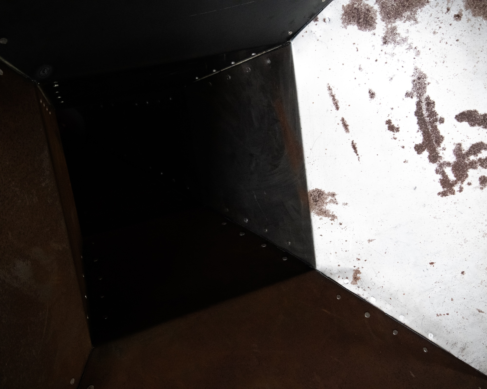
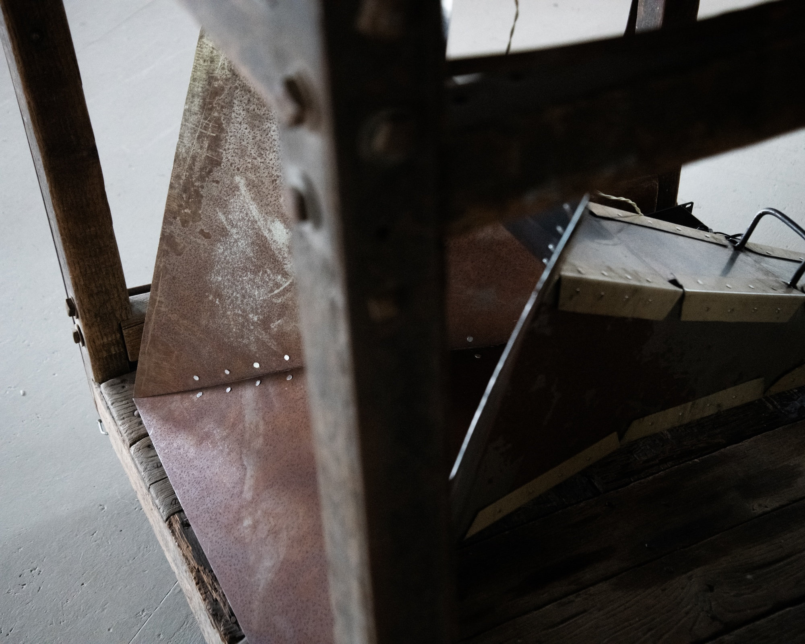
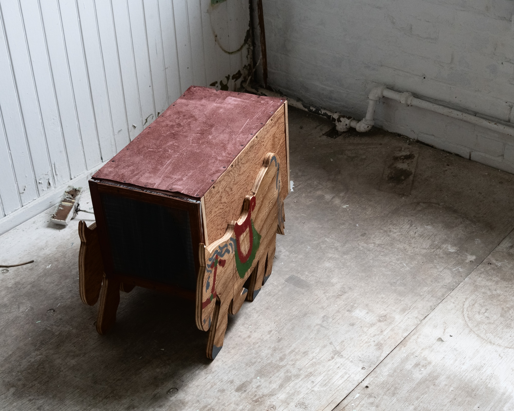
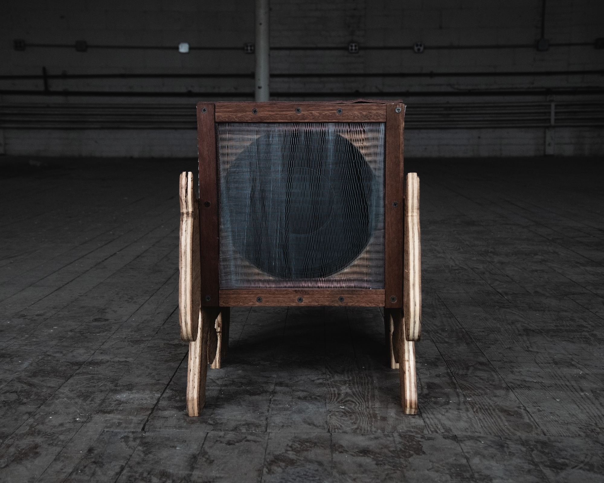
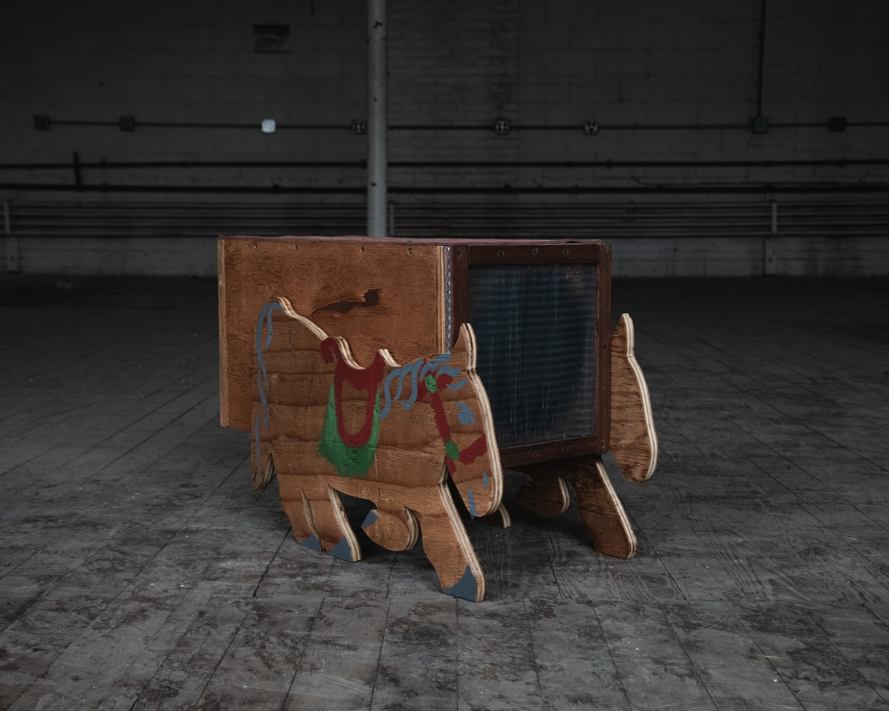
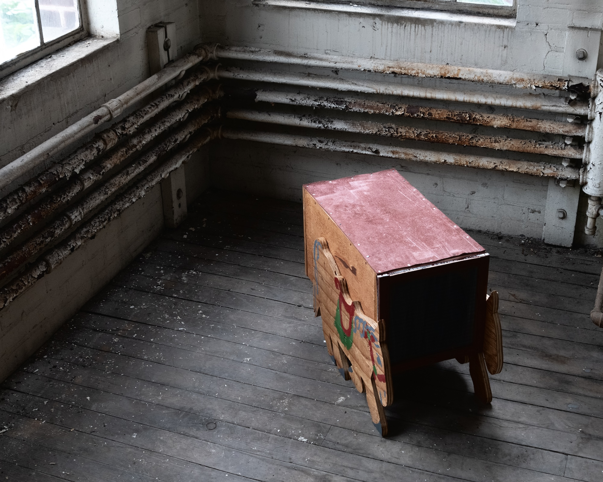

Speakers
I have been interested in creating experimental speaker designs for active and passive amplification of existing and synthetic environments.








I have been interested in creating experimental speaker designs for active and passive amplification of existing and synthetic environments.






